Digital Transformation · Case Study·McKinsey-led Programme · TCS Interactive · SBI
YONO 2.0Insurance Vertical —anatomy of a transformation.
A three-year, McKinsey-led digital transformation programme at India's largest bank. 40+ insurance products. Four channels. 500M+ account holders. A case study in pattern leverage — how a small set of anchor journeys, designed deliberately, came to govern the entire portfolio.
MandateInsurance Vertical Lead
ClientState Bank of India
ProgrammeMcKinsey-led, three-partner
DurationJan 2024 – Present
ChannelsApp · Web · Branch · Tablet
The product · across channelsAuto-advancing · hover to pause
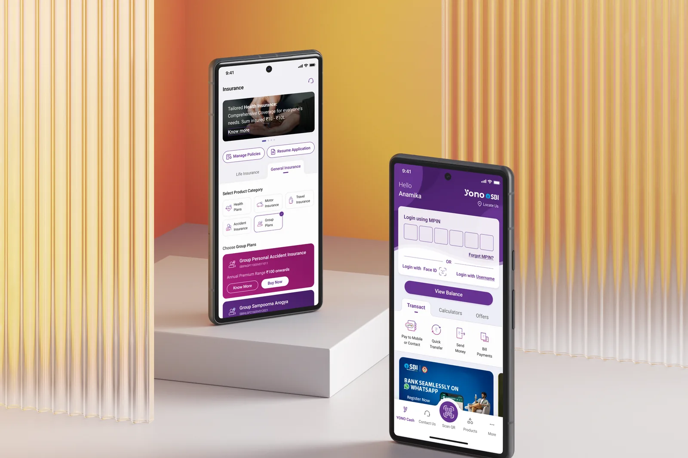
Insurance vertical · AppThe General Insurance flows and secure entry on the YONO app, where the anchor journeys shipped first.
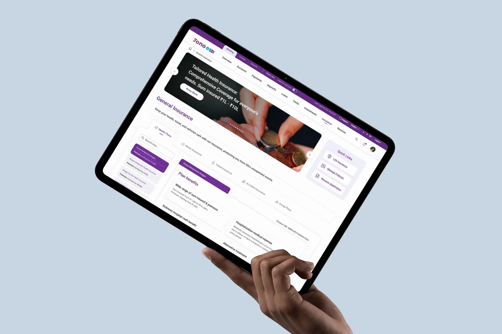
General Insurance · Web + TabletProduct categories, plan benefits and Manage Policies collapsed onto one navigable surface.
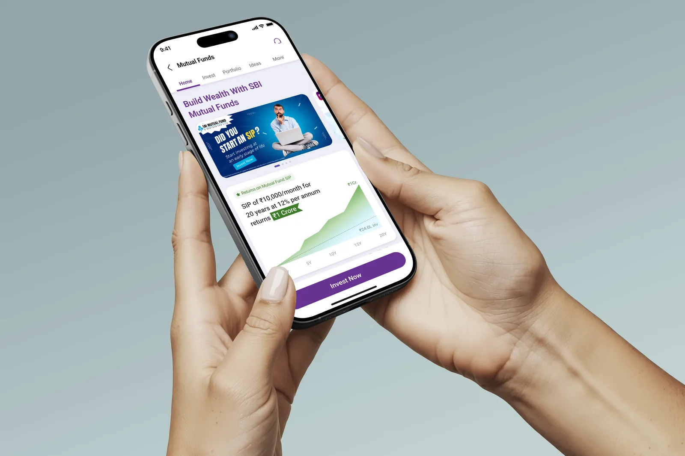
Wealth · AppMutual funds and SIP journeys, adjacent to insurance on the same product rail.
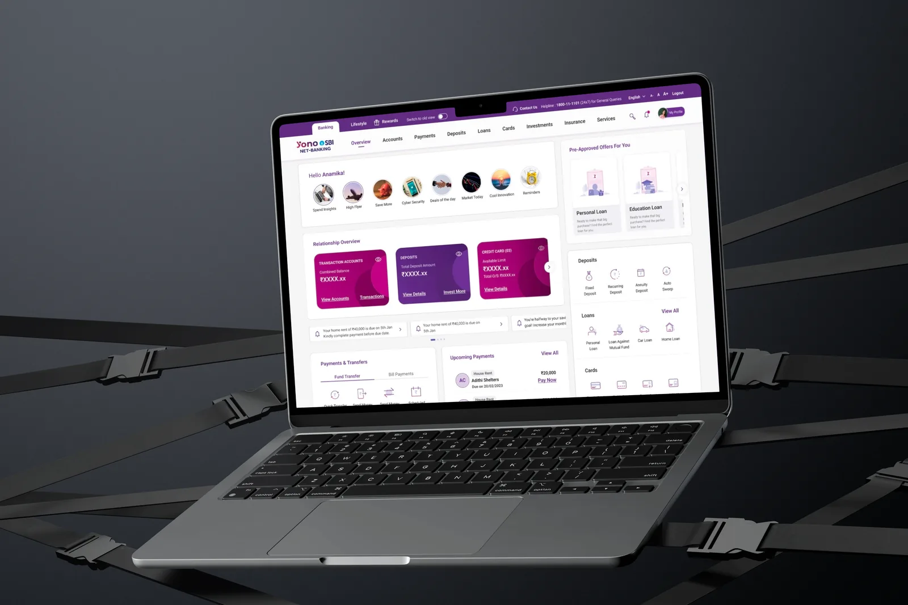
Customer web · OverviewThe relationship overview where insurance now sits beside accounts, deposits and cards.
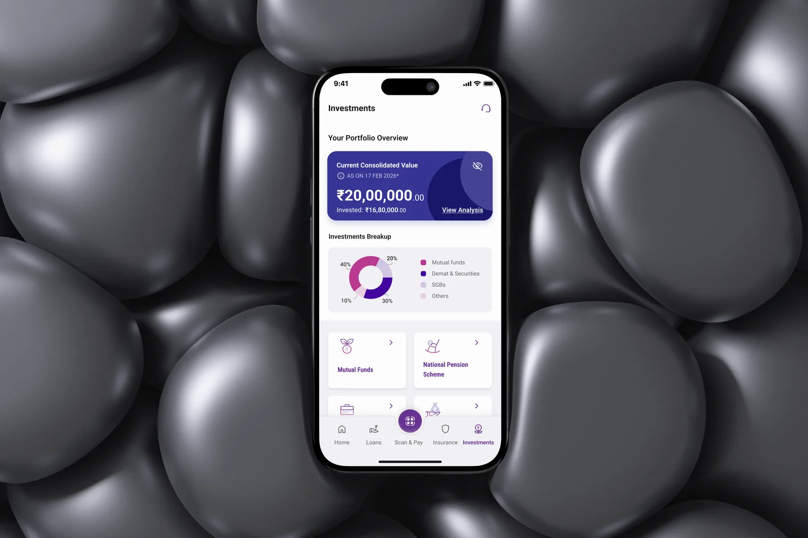
Investments · AppPortfolio surfaces, part of the 40+ product portfolio governed by the shared pattern.
01 / 05
The diagnosis · before the work began
74%
Branch-driven sales. Insurance distribution dependent on staff convincing customers in person — the digital channel was vestigial.
60%
Annual churn. Auto-renewal at ~40% — meaning two in three customers walked away each year despite a 4-lakh monthly acquisition rate.
4L
Monthly policies sold. SBI's highest-volume insurance product (GPAI) — yet pulled forward by branch staff, not by digital pull.
0
Peer banks with native parity. No HDFC, no ICICI offered insurance distribution natively in their banking app — a clear first-mover gap.
The 30-second version
I led the insurance vertical of SBI's YONO 2.0 — a McKinsey-led transformation of India's largest bank. The method was pattern leverage: design a few anchor journeys so well they govern a 40+ product portfolio across four channels, rather than designing forty from scratch.
RoleInsurance Vertical Lead
Scope40+ products · web, app, branch, tablet
ImpactPatterns adopted as the vertical's reference standard
The same GPAI and GSA journeys, coherent across web, mobile app, and the staff-facing branch portal — with the field-sales tablet build currently in progress. Scroll the lineup.
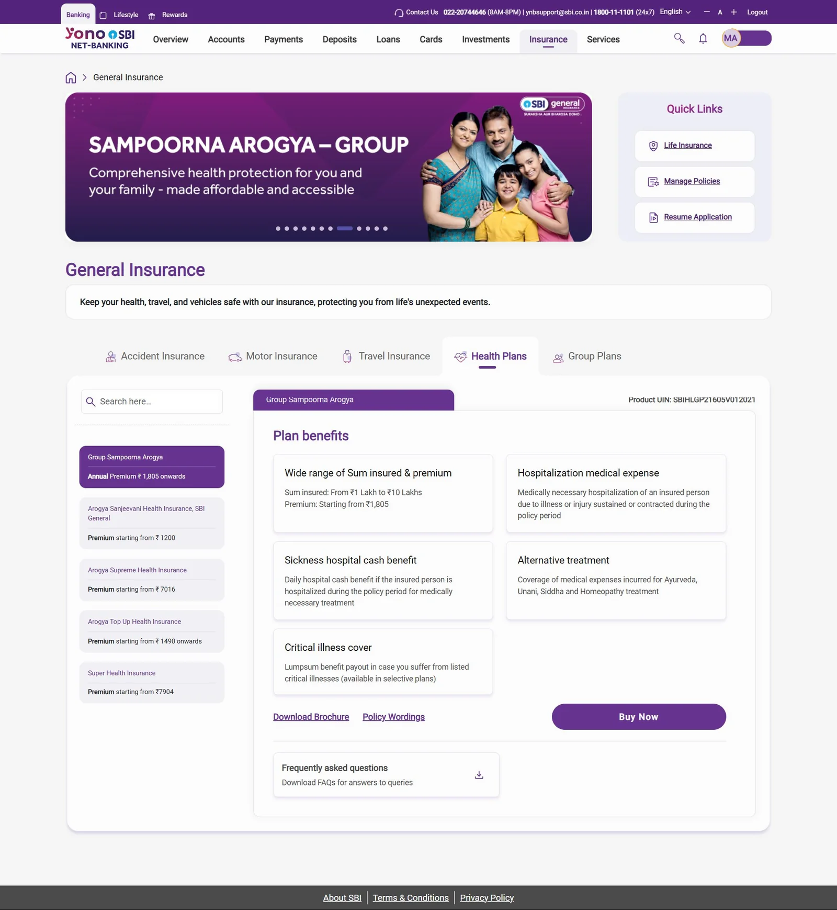
WebLive
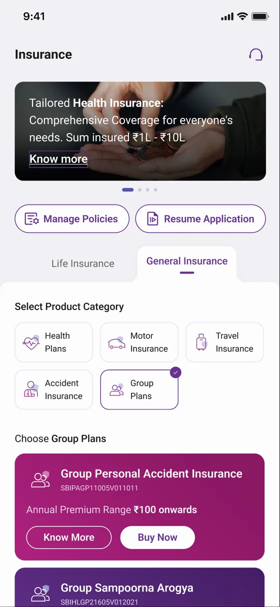
Mobile AppLive
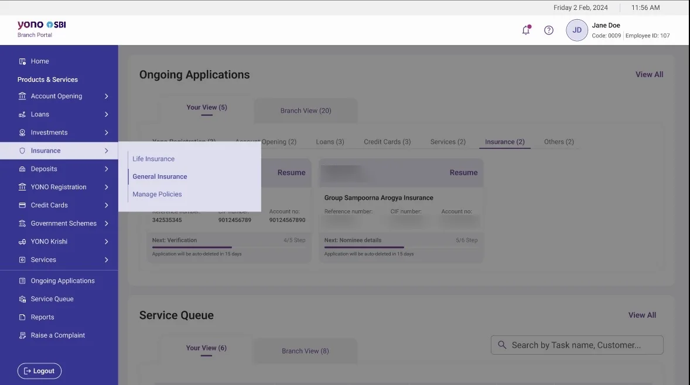
Branch PortalLive · Staff
In progress
Field-Sales TabletIn progress
01The Mandate
A super-app strategy at 500M-customer scale.
YONO — You Only Need One — is SBI's unified digital banking platform serving over 500 million account holders. Originally launched in 2017 as a core banking utility, it had grown into a fragmented product that could no longer compete with PhonePe, Google Pay, and the fintech aggregators rapidly capturing India's next generation of customers. The strategic problem was distributional, not technical. SBI was losing the digital relationship despite owning the underlying customer base.
YONO 2.0 was a ground-up rethink. The strategic vision: transform YONO from a banking utility into a lifestyle super-app — a single platform for banking, insurance, investments, loans, UPI, and lifestyle services, targeting 20 crore digital users with a completely new technology stack, unified mobile-web architecture, and omnichannel continuity.
At its December 2025 launch, SBI described YONO 2.0 as running on a unified backend architecture — the app and internet banking sharing one interface, so customers move across mobile, web, and branch without losing continuity.
Connect over 23,000 branches and field teams into one unified digital fabric.
C.S. Setty, Chairman, State Bank of India · Business Standard, 15 December 2025
The programme operated as a structured three-partner engagement: McKinsey & Company as strategy and UX research partner, TCS Interactive as design and development execution partner, and SBI as primary business and regulatory owner. At peak capacity the design organisation comprised 65 designers — UX, visual, and illustration — working across the platform's complete product surface. Within that programme, my mandate was the insurance vertical.
The insurance vertical itself spans 40+ products across General and Life Insurance — group accident, group health, motor, travel, term life, ULIP, redirection journeys for partner-distributed products, and policy-management flows for each. The transformation goal: digitise the full portfolio without designing forty-plus journeys from scratch.
02The Diagnosis
Not a UX problem. A distribution architecture problem.
SBI General's Group Personal Accident Insurance (GPAI) was the bank's highest-volume single insurance product — approximately 4 lakh policies sold monthly. Yet over 74% of those sales were branch-driven, dependent on staff personally convincing customers to purchase. The product was push-dependent, not pull-driven. Auto-renewal sat at roughly 40% — meaning 60% churn annually, despite the customer-acquisition flywheel running at scale.
The existing YONO 1.0 journey had four screens and effectively zero organic discoverability. No peer bank had solved this natively. The opportunity was first-mover and first-class — but the design challenge was making it real across every channel, within every regulatory constraint, for every stakeholder simultaneously.
The four complexity factors that defined the problem
01
Regulatory gating at every stepConsent flows, payment authentication, and policy issuance each required sequential clearance from the bank's information-security, risk, and compliance functions. A design change in one channel cascaded through all variants — and any one of those teams could block release.
02
Eleven internal stakeholder teamsCoordination spanned eleven internal teams across business, technology, risk, and compliance functions, each with independent review authority. Standard consulting delivery patterns assume 2–4 stakeholder groups; this was institutional governance at unusual breadth.
03
Four channels, one journeyThe same underlying flow had to function coherently across mobile app, web browser, branch portal (staff-facing), and field sales tablets. Each had fundamentally different user contexts, technical constraints, and interaction paradigms — and customers had to be able to switch channels mid-journey without losing state.
04
Three-partner governanceEvery significant decision required simultaneous alignment across McKinsey, TCS Interactive, and SBI. No single partner held unilateral approval authority. Velocity inside this structure was not a function of how fast you designed — it was a function of how cleanly you framed the call.
The reframe
This was never a UX problem. It was a distribution-architecture problem wearing a UX costume — and that diagnosis is what made everything downstream possible.
03My Mandate
Designer in title. Operator at lead capacity.
I joined the programme in January 2024 as a Designer — the entry rung of a three-tier hierarchy: Designer → Senior Designer → Associate Director. My responsibilities exceeded that designation from week one. The work didn't ask permission to scale up to it.
I owned journeys end-to-end, directed a team of UX and visual designers from NID and IITs, coordinated across three partner organisations, navigated 11 internal SBI stakeholder teams, and established the design patterns that became the reference standard for the rest of the insurance vertical. The title described the job grade. The mandate is what got delivered.
Areas of accountability
01 / Insurance vertical
End-to-end ownership
Anchor journey design (GPAI, GSA, and 5–6 others) plus the pattern library that governs all 40+ products in the portfolio.
02 / Branch portal
Reference standard set
Completed the core branch employee dashboard. Now the mandatory reference standard for all branch portal journeys across Phase 2 and Phase 3.
03 / Web platform
YONO Web architecture
Main landing, manage flows, navigation system, visual design language, and responsive layouts across three breakpoints.
04 / Quality & consistency
42-journey audit (solo)
Audited every Phase 2 journey personally — became the only person on the programme with end-to-end product knowledge.
05 / Team direction
5 direct reports
Directed 4 visual designers and 1 UX designer on insurance — all NID and IIT graduates. Previously directed two designers on web and branch.
06 / Stakeholder bridge
Three-partner coordination
Translation layer between McKinsey strategy, TCS execution, and SBI's regulatory and operational teams — a consulting role inside a designer's seat.
04Strategic Approach
Pattern leverage, not per-product execution.
The naive approach to a 40-product portfolio is to design 40 product journeys. The correct approach is to design the smallest set of anchor journeys that, once frozen with regulatory clearance and proven across channels, can govern the rest by adoption. That's the leverage thesis. It was never spoken as such — it emerged from the operational reality that no design team in the world, however large, could iterate 40 journeys to the depth that GPAI required and have any of them ship inside the programme timeline.
Why GPAI as the anchor
GPAI was selected because it was the optimal stress-test: relatively simple product (one product, fixed premium tiers, well-understood user base), but the highest-volume single insurance product the bank ran. Designing it cleanly meant proving the entire vertical's regulatory clearance pathway, payment authentication models, consent architecture, and channel-coherence model — once. Every journey downstream of GPAI inherits that groundwork.
Pattern leverage — anchor journeys → portfolio
AI-augmented research and benchmarking
Inside a programme of this scale and timeline pressure, research throughput is a velocity constraint. I leveraged AI tools — Claude in particular, alongside ChatGPT, since I'd been a power user since December 2022 — to compress competitive benchmarking, transcript synthesis, and pattern analysis cycles substantially. The output quality bar didn't move; the time to reach it did.
AI-augmented practice
Multi-shot prompts as a research accelerant
Structured, format-constrained prompts compressed multi-day competitive analyses into hours — synthesising HDFC, ICICI, and fintech aggregator insurance flows against benchmarks and surfacing pattern gaps. The discipline isn't doing less work; it's spending the saved cycles on the parts of the problem only a designer can solve: framing, diagnosis, and the strategic call.
The 10-step Garage workplan
Every anchor journey moved through a structured pipeline of ten steps — McKinsey's Garage methodology, adapted for the SBI regulatory environment. Understand current journey · benchmark peers · define cross-channel process flows · enumerate exception scenarios · define exception-path flows · scope MVP and feature drops · re-iterate against ISO/Risk/Compliance · obtain in-principle regulatory approvals · build low-fidelity wireframes · build the BRD. The point of the structure is not the sequence; it's that no step ships without the prior step being closed.
Approximately 500–600 screens were designed and iterated across the GPAI purchase and manage journeys before reaching frozen status. What drove that volume was not execution gaps — it was that stakeholders, seeing the journey rendered visually for the first time, began to understand what further possibilities existed. New functionalities were scoped incrementally across rounds. Velocity inside three-partner governance is a function of how cleanly each call gets framed, not how fast the designer pushes.
05Strategic Calls
Four calls worth examining
The following document the kind of decisions that don't show up in a screen count but determine whether a product works at scale. Each is structured the same way: diagnosis (what was actually broken), call (the trade-off accepted, the position taken), and outcome (what shipped and what it shaped downstream). Click any to expand.
How to read these
Four decisions, one governing idea. Each call below didn't just solve its own screen — it became a pattern the rest of the 40+ product portfolio inherited by adoption.
01
FAQ removal — when an operational ask creates a UX failure
GPAI · App & Web · Product Details Page
+
DiagnosisCallOutcome
The insurance landing page presented two CTAs on every product card: Buy Now and Know More. The bank's content operations team requested removal of the FAQ accordion from the product details page — maintaining current FAQs across every insurance product was operationally unsustainable within their CMS workflows.
The request was reasonable. My pushback was not on the removal itself, but on what the removal left unresolved. A user selecting Know More is, by definition, in an uncertain state. They are not ready to purchase. Removing the FAQ without replacing the informational function produces a page that fails its only purpose: converting an uncertain browser into a confident buyer. The user selecting Buy Now bypasses this page entirely — so the page was never designed for them.
Outcome
FAQ section removed as operationally requested. The remaining content — USP carousel, policy benefits accordion, policy wording — was restructured to carry the full informational weight of the removed section. The page was redesigned explicitly around the uncertain user mental model, not the committed purchaser who bypasses it. Operational cost reduced without sacrificing conversion architecture.
02
Browsing-panel architecture — refusing to digitise the silo
Insurance Landing · App & Web
+
DiagnosisCallOutcome
The initial stakeholder proposal for the insurance landing page was a simple binary toggle: switch between General Insurance and Life Insurance, replace the visible content. I proposed against this model. A toggle-based approach pushes users into a predetermined insurance category on arrival and provides no natural pathway across to the other. It replicates the bank's internal organisational silo digitally — a structural mistake that customers would experience as friction.
Instead, I designed a persistent top fold — banners auto-scrolling with four quick-action anchors, and a GI/LI selector — that remains constant regardless of selection state. Below the fold, content updates contextually based on the user's selection, with a horizontal tab system for product category browsing within each vertical. As the user scrolls into the product list, the banner recedes but the Manage Policies and Resume Application CTAs pin to the top edge and stay reachable — depth of browsing never costs access to intent.
Stakeholder objection: the interaction is too complex to build and too unfamiliar for users. My counter was grounded in existing product precedent — the Relationship Overview section of the YONO web portal already implements an identical contextual-update pattern. Users on the platform already understand and use this behaviour. We were not introducing new interaction paradigms; we were applying a known, validated pattern to a new context.
Outcome
Approved and built as specified. The browsing-panel model increased cross-category product exposure organically, replacing the forced-category-selection model. Behavioural consistency with existing YONO web patterns reduced both user cognitive load and development risk simultaneously.
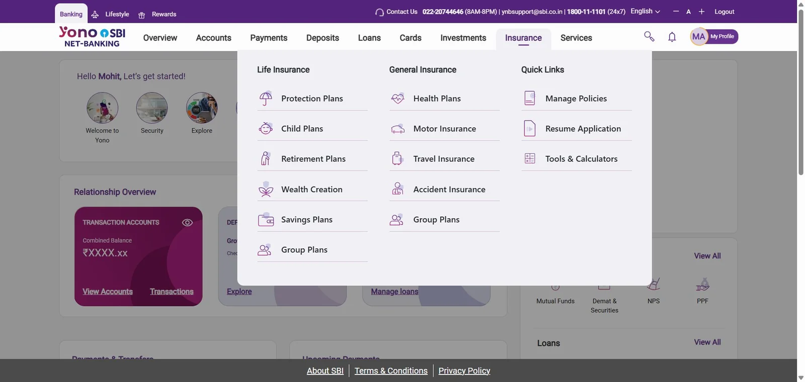
Shipped · YONO 2.0 Web · Insurance dropdown — see full screen in §06 The Work
YONO 2.0 App · Insurance landing — the sticky quick-actions and browsing panel
03
Manage journey — separation of viewing state from action state
App & Web · Policy Details + Manage Flows
+
DiagnosisCallOutcome
The manage journey encompassed seven distinct policy actions: renewal, deletion, email policy, document download, password management, policy wordings access, and additional servicing options. The initial functional requirement was to surface all seven CTAs directly on the policy details page.
The resulting page would be attempting to serve two incompatible purposes simultaneously — a policy information display and a policy action hub. A user arriving to review their coverage is confronted with seven management actions they did not seek. The interaction model was cluttered and the information architecture was misleading. Separation of concerns was the correct solution. Reaching agreement on it was the actual design problem.
My proposal: the policy details page presents only policy information. A single persistent sticky CTA — Manage Policy — anchored at the bottom of the view opens a bottom drawer containing all seven actions. Secondary, lower-frequency actions (email, download, password) are promoted to a second-level drawer state within the manage flow, keeping the primary action set clean and scannable.
Outcome
Approved and implemented. The pattern performed well enough that it was formally adopted as the mandatory reference standard for every manage journey subsequently built across the insurance vertical — all products, all phases, all channels. The web version applied the same separation logic with a viewport-appropriate layout adaptation. Any manage flow in YONO 2.0 insurance today is structurally derived from this one decision.
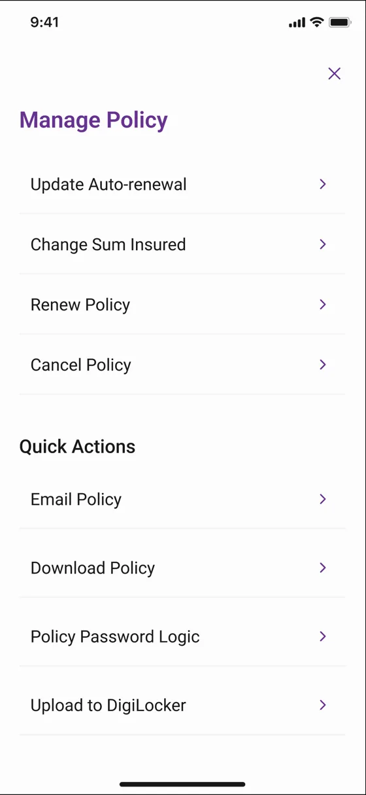
YONO 2.0 App · Manage Policy drawer — seven actions, one entry point
04
One tab structure for a combinatorial nominee problem
GSA · App · Nominee & Appointee Capture
+
DiagnosisCallOutcome
Group Sampoorna Arogya is not a single-life product. A policy can carry up to 7 members; each member can name up to 7 nominees; and when a nominee is a minor, an appointee is legally mandatory — up to 7 of those as well. At the limit, a single purchase demands nominee and appointee data for dozens of individuals. The stakeholder proposal handled this by splitting nominees and appointees into two separate input sections.
Taken to the product's real scale, that decision produces a purchase journey long enough to collapse under its own weight, and it forces the user to mentally re-associate each appointee back to the minor they belong to across two disconnected sections. The split was the problem, not the volume.
My proposal: the appointee lives inside its corresponding minor nominee's tab, so the association is structural rather than something the user reconstructs. A horizontal top-tab structure lets the user traverse between nominees while staying on one page, so depth (many nominees) never becomes length (many screens). The common case — one adult nominee with no appointee — stays a single clean tab; the machinery only surfaces when a minor nominee requires it. Progressive disclosure applied to a regulatory data model.
Outcome
Nominee capture is where insurance purchase flows leak — legal-completeness collides with form fatigue, and this product's data requirements are among the heaviest in the portfolio. Containing the full member, nominee, and appointee matrix inside one navigable pattern kept the GSA journey from forking into separate flows per configuration, and the structure held for every combination the product allows.
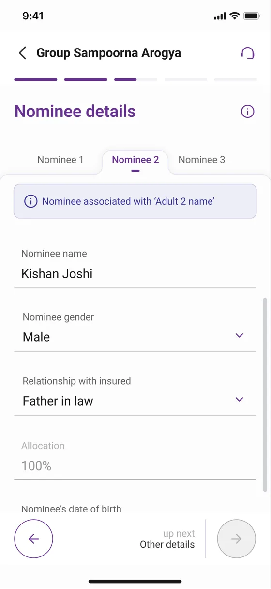
YONO 2.0 App · GSA nominee & appointee tabs — one structure, every configuration
06The Work
The strategic calls, rendered in production.
A selection of live screens from the YONO 2.0 web platform — the same product surface 500M+ account holders interact with today. These directly demonstrate the design decisions documented in the strategic calls above, and the mobile screens below extend the same calls onto the phone surface.
The browsing-panel architecture — consolidated without silos.
The persistent top fold carries banners, quick actions, and the GI/LI selector. The content panel below updates contextually with the selection — product category tabs, plan cards, plan benefits, brochure, policy wordings, and the primary CTA — all without changing page. This is the page that refused to digitise the bank's organisational silos as a binary toggle. Three separate pages collapsed into one navigable surface.
A single sticky Manage Policy action anchors the page; the surface itself is dedicated to policy, personal, and nominee information. Seven possible policy actions sit one tap behind a structured drawer rather than competing for attention at the top of the page. This pattern is now the mandatory reference standard for every manage flow in the insurance vertical.
The insurance entry surface — three categories, one mental model.
Life Insurance, General Insurance, and Quick Links sit side-by-side in the global nav — exposing the full product portfolio without forcing a category choice on the user before they have context. The structure mirrors the landing page architecture, so users learn the IA once and apply it everywhere.
The Relationship Overview — the precedent that won the argument.
When stakeholders pushed back on the insurance browsing-panel pattern as too complex, this page was the evidence: the YONO web Relationship Overview already used an identical contextual-update model across transaction accounts, deposits, and loans. Not a new behaviour — a familiar pattern applied to a new context. The right rail extends the same logic across the entire product portfolio.
Left-rail navigation, breadcrumb anchored to the home, contextual right-side content panel, sticky primary action at the bottom. The same skeleton governs insurance, accounts, investments, and profile management — the consequence of pattern leverage executed at programme scale. Once a user learns one surface, they have learned all of them.
A note on these captures
YONO 2.0 launched publicly on 15 December 2025. The web screens are captured from the live production platform; the mobile screens are the production visual designs for the same journeys. Personal fields on the policy-management screen are masked. The strategic calls documented above govern every channel of the product, not just the web surface.
07Outcomes
The patterns became the product.
Because GPAI was the first insurance journey designed and the most thoroughly iterated, it became the de facto pattern library for the entire insurance vertical. The branch portal dashboard work independently became the reference standard for all branch portal journeys across Phase 2 and Phase 3. Both remain active reference points today.
Formal written appreciation from the SBI product owner confirming pattern adoption across the insurance portfolio — patterns I established now govern the design of products I never personally touched.
GPAI patterns adopted across all insurance journeysConsent flows, payment authentication models, nominee capture, policy management drawer structure, and exception handling — adopted directly into every subsequent insurance product without redesign.
↗
Group Sampoorna Arogya — Group Health InsuranceSignificantly more complex journey involving accordion-based coverage selection, tiered family member management, and conditional eligibility logic — built across all four channels using GPAI as the structural foundation. Validation of the pattern-leverage thesis at meaningfully higher complexity.
↗
Branch portal — programme-wide reference standardBranch portal insurance journeys and the core employee dashboard became the mandatory design reference for all other teams building branch portal experiences in Phase 2 and Phase 3. This standard is still applied across the programme today.
↗
General Insurance redirection products and Life Insurance manage flowsThe pattern library extended cleanly into adjacent product verticals, maintaining cross-vertical design consistency throughout the product. This is what 40+ products under one design system actually means.
↗
Star Performer of the Year — TCS Interactive10+ performance awards and written client appreciations within the first year on the programme. Recognition that operated at lead capacity inside a Designer grade.
The impact
One designer's calls became the governing standard across a 40+ product, four-channel, 110+ journey portfolio. Measured honestly, the impact is scope of influence — not a vanity metric a product this newly launched could not yet have.
Programme-level scale governed by these patterns
8
Phase 1 Journeys
42
Phase 2 Journeys
110+
Phase 3 Journeys
08The Audit Initiative
An audit nobody assigned — that nobody could afford to skip.
Towards the close of Phase 2, I initiated a design consistency audit across all 42 delivered journeys. No formal assignment existed for this work. The motivation was straightforward and consultant-shaped: with 65 designers working in parallel across independent journeys, inconsistencies had accumulated across component usage, interaction language, data field labelling, and visual patterns. Left unaddressed, these would compound significantly when Phase 3 scaled the platform to 110+ journeys.
How the audit was run, and the friction it created
I reviewed every journey individually. Documented current state versus expected state in a structured Excel audit. Tagged each journey owner against their specific issues. Compiled a consolidated report for senior management with a prioritised remediation plan. Monitored resolution progress to formal closure. This is the kind of work consulting firms charge for. I did it because it needed doing.
The exercise generated friction. Surfacing design quality issues in other teams' work, at scale, during active Phase 3 delivery was uncomfortable for everyone. The work was completed regardless. It is, in a real sense, the most consulting-coded thing I did on the programme — identifying compounding risk before it manifested, structuring a remediation plan, and driving it to closure inside resistant institutional dynamics.
Having reviewed all 42 Phase 2 journeys in detail, I became the only member of the programme team with comprehensive end-to-end product knowledge. Today, when any designer needs to know whether a pattern has been solved elsewhere in the product, they come to me first.
The takeaway
Unassigned work that made me the single owner of platform-wide design consistency.
09Ongoing Scope
Active in Phase 3
Currently leading five concurrent journeys in Phase 3 — spanning AI product design, inclusive design for underserved users, international banking, and investments.
AI Chatbot — 3-phase rollout
Phase 1: basic support. Phase 2: competitive parity. Phase 3: full LLM-level banking assistant embedded in YONO. AI as a customer-facing product surface, not just a workflow tool.
Inclusive Savings Account
Redesigning account journeys for illiterate and minor users. Rethinking consent, form interaction, and verification patterns. App, web, branch portal — financial inclusion at policy scale.
NRI PIS — Demat & Trading
NRE and NRO account types for non-resident Indian customers. Branch portal journey, regulatory-cleared.
Investments Landing Page
Entry point and discovery design for the investments vertical on YONO 2.0 — the next major customer surface beyond banking and insurance.
Gamification Journey
Scoped. Initiation pending.
10What This Proves
What this work demonstrates.
Stripped of project-specific detail, one capability defines this work.
Systems design at portfolio scale. Identifying the smallest set of anchor decisions that govern a sprawling product portfolio, then driving them to adoption until they govern products I never personally touched. Designing the system, not the symptom — the leverage thesis was the work.
Three capabilities made that possible.
In support
Operating inside institutional complexity
Three-partner governance, eleven internal stakeholder teams, regulatory gating at every step. Velocity here is a function of how cleanly the call gets framed — not how fast the work moves.
In support
Strategic instinct under ambiguity
The audit was unassigned. The browsing-panel call meant pushing back on stakeholders. The manage-flow architecture was an IA diagnosis, not a UI choice. Each owned to outcome.
In support
AI-augmented research velocity
Compressing competitive analysis, transcript synthesis, and pattern-review cycles with structured prompt design and persistent context — without compromising rigour.
The context for this work: functioning at lead capacity while graded as a Designer, inside a three-partner enterprise transformation engagement, coordinating across regulatory gatekeepers and 11 internal stakeholder teams, governing a 40+ product portfolio through pattern leverage rather than per-product execution.
Open to consulting roles
Ready for the next transformation programme.
Targeting design-led digital transformation roles at Accenture Song, Deloitte Digital, and Publicis Sapient. Also exploring UX strategy and digital transformation consultant roles in Dubai. Based in Mumbai · open to hybrid & relocation.